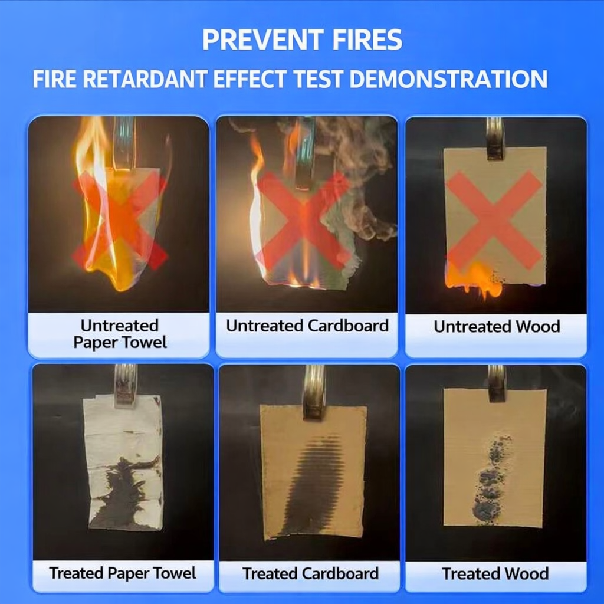

Professional Timber Fire Protection Solution
Our water-based flame retardant coating significantly improves fire resistance performance of timber, plywood, MDF and decorative wooden materials.
Developed by a professional fire retardant coating manufacturer for residential, commercial and public building projects.
The transparent version keeps the original wood texture. White finish is optional if required.
Yes. The low-VOC formula is suitable for interior environments.
Durability depends on coating thickness and environmental conditions.
Need fire protection for structural steel projects?
View Steel Fireproof Coating